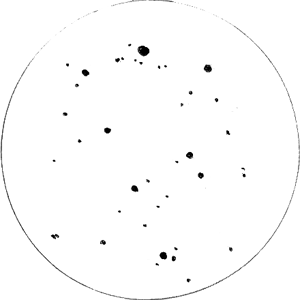

겨울 밤 하늘의 크리스마스 선물꾸러미
겨울 밤 하늘엔 크리스마스 선물 꾸러미가 있다. 먼저, 아름다운 모습을 감상해 보자. (이미지를 클릭하면 확대된 사진을 볼 수 있다)

|

|
| 이양수, 음악이 있는 동영상 | NASA 외, 사기적인 영상 편집 ^^ |

|

|
| 사진 Bach Zoltan | 성운·성단 설명 |
눈결정 성단
스피처 우주망원경의 적외선 사진에서는 또 다른 선물을 찾을 수 있다. 바로 눈결정 성단이다.
두꺼운 먼지 구름 뒤에 숨어 있는 분홍 색의 아기 별들이 사방으로 줄지어 태어난 모습을 찍은 것이다.
시간이 지나면 대열도 흩어지고 별의 색도 바뀌어 갈 것이다.
* 주의: Snowflake Cluster를 눈송이 성단/성운으로 오역한 문서가 많다. 성단의 모습과 설명을 보면 '눈결정'으로 번역하는 것이 더 어울린다.
NASA 설명
참조.

|
성도에서의 위치
오리온 옆 외뿔소자리에 있으며, 성단·성운 모두를 포함하여 NGC 2264로 분류한다.

|

|
| 외뿔소자리 성도 | 빨간 사각형 확대 성도 |
우리 은하에서의 위치
지구에서 가까운 거리인 약 2500 광년 떨어져 있으며, 지구와 함께 오리온 팔에 위치한다. 우리 은하의 전체 모습에 대한 설명은 인상파 과학·예술가가 그린 은하수를 참조하라.

|

|
| 우리 은하의 평면도 | 빨간 사각형 확대 그림 |
망원경으로 관측하자
|
 |
소구경 망원경으로 트리의 모습을 쉽게 확인할 수 있다. 옆 스케치는 굴절 4" F/10, 18mm 접안렌즈로 관측한 것이다. 관측 기록 상세 |